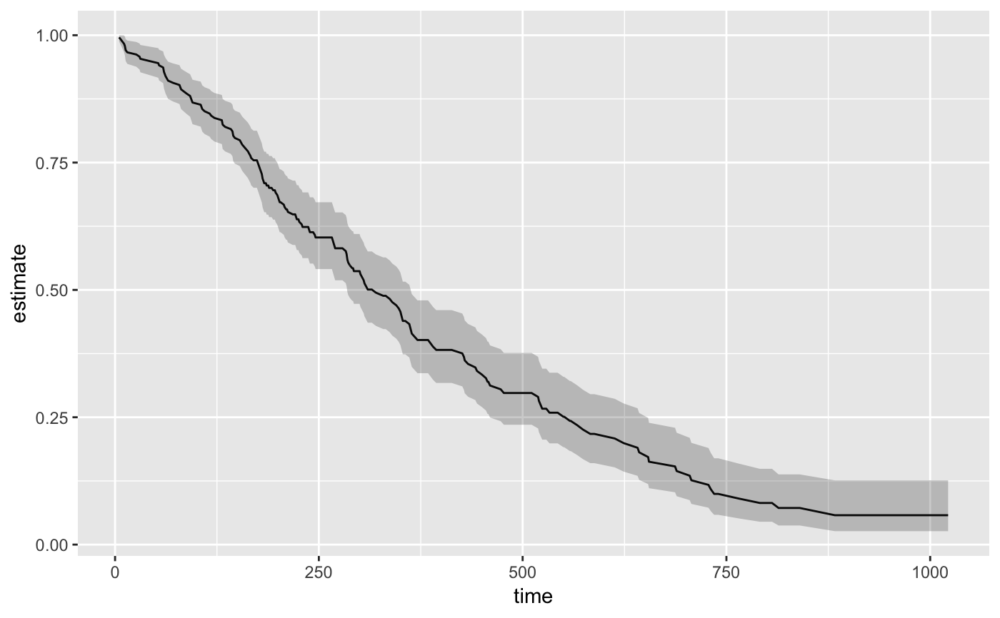
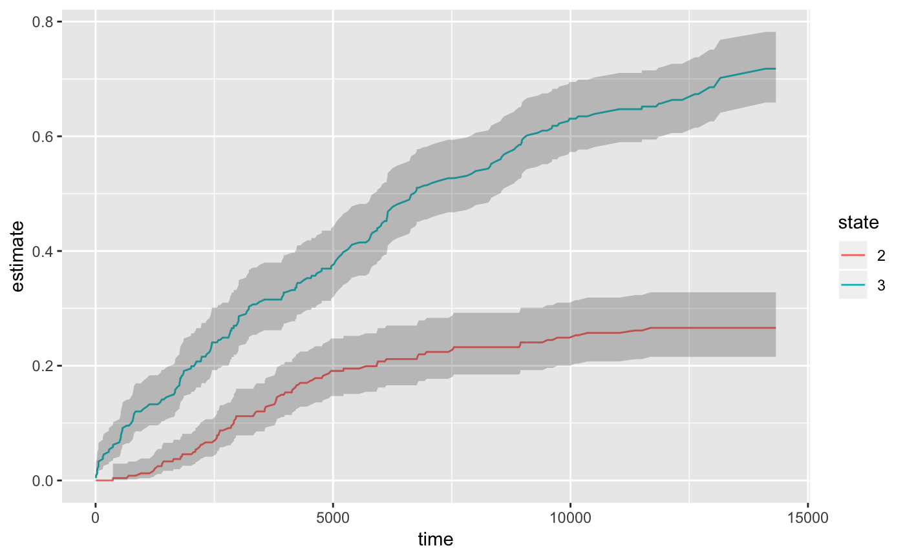

Tidy summarizes information about the components of a model. A model component might be a single term in a regression, a single hypothesis, a cluster, or a class. Exactly what tidy considers to be a model component varies cross models but is usually self-evident. If a model has several distinct types of components, you will need to specify which components to return.
# S3 method for survfit tidy(x, ...)
| x | An |
|---|---|
| ... | Additional arguments. Not used. Needed to match generic
signature only. Cautionary note: Misspelled arguments will be
absorbed in |
A tibble::tibble with one row for each time point and columns:
timepoint
number of subjects at risk at time t0
number of events at time t
number of censored events
estimate of survival or cumulative incidence rate when multistate
standard error of estimate
upper end of confidence interval
lower end of confidence interval
state if multistate survfit object inputted
strata if stratified survfit object inputted
Other survival tidiers: augment.coxph,
augment.survreg,
glance.aareg, glance.cch,
glance.coxph, glance.pyears,
glance.survdiff,
glance.survexp,
glance.survfit,
glance.survreg, tidy.aareg,
tidy.cch, tidy.coxph,
tidy.pyears, tidy.survdiff,
tidy.survexp, tidy.survreg
library(survival) cfit <- coxph(Surv(time, status) ~ age + sex, lung) sfit <- survfit(cfit) tidy(sfit)#> # A tibble: 186 x 8 #> time n.risk n.event n.censor estimate std.error conf.high conf.low #> <dbl> <dbl> <dbl> <dbl> <dbl> <dbl> <dbl> <dbl> #> 1 5 228 1 0 0.996 0.00419 1 0.988 #> 2 11 227 3 0 0.983 0.00845 1.000 0.967 #> 3 12 224 1 0 0.979 0.00947 0.997 0.961 #> 4 13 223 2 0 0.971 0.0113 0.992 0.949 #> 5 15 221 1 0 0.966 0.0121 0.990 0.944 #> 6 26 220 1 0 0.962 0.0129 0.987 0.938 #> 7 30 219 1 0 0.958 0.0136 0.984 0.933 #> 8 31 218 1 0 0.954 0.0143 0.981 0.927 #> 9 53 217 2 0 0.945 0.0157 0.975 0.917 #> 10 54 215 1 0 0.941 0.0163 0.972 0.911 #> # ... with 176 more rowsglance(sfit)#> records n.max n.start events rmean rmean.std.error median conf.low #> 1 228 228 228 165 380.9381 20.27475 320 285 #> conf.high #> 1 363library(ggplot2) ggplot(tidy(sfit), aes(time, estimate)) + geom_line() + geom_ribbon(aes(ymin=conf.low, ymax=conf.high), alpha=.25)# multi-state fitCI <- survfit(Surv(stop, status * as.numeric(event), type = "mstate") ~ 1, data = mgus1, subset = (start == 0)) td_multi <- tidy(fitCI) td_multi#> # A tibble: 474 x 9 #> time n.risk n.event n.censor estimate std.error conf.high conf.low state #> * <dbl> <int> <int> <int> <dbl> <dbl> <dbl> <dbl> <fct> #> 1 6 0 0 0 0 0 0 0 2 #> 2 7 0 0 0 0 0 0 0 2 #> 3 31 0 0 0 0 0 0 0 2 #> 4 32 0 0 0 0 0 0 0 2 #> 5 39 0 0 0 0 0 0 0 2 #> 6 60 0 0 0 0 0 0 0 2 #> 7 61 0 0 0 0 0 0 0 2 #> 8 152 0 0 0 0 0 0 0 2 #> 9 153 0 0 0 0 0 0 0 2 #> 10 174 0 0 0 0 0 0 0 2 #> # ... with 464 more rowsggplot(td_multi, aes(time, estimate, group = state)) + geom_line(aes(color = state)) + geom_ribbon(aes(ymin = conf.low, ymax = conf.high), alpha = .25)